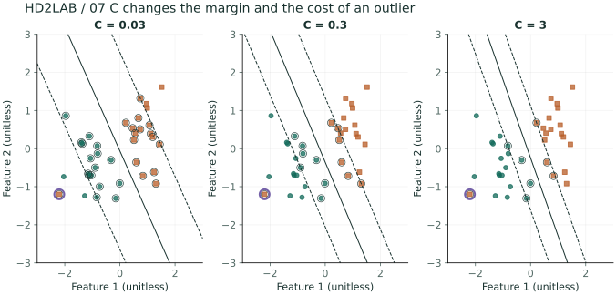
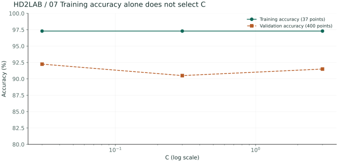
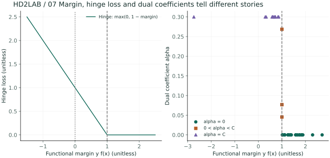
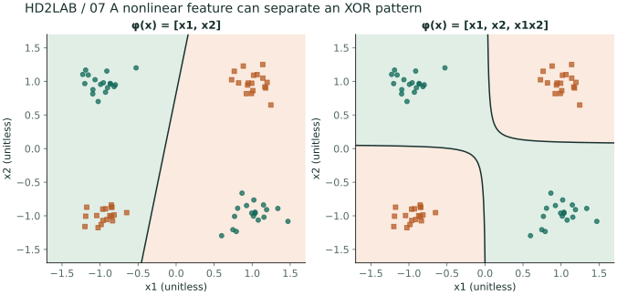

01 /だけで決定されるわけではない、境界線
仮想メッセージを、リンク比率と繰り返しトークン比率という形で表現するとします。データを完全に分割する直線は複数存在することがあります。SVMは、近接する観測点や境界との間の余白の中から、そのうちの一つを選びます。
02 /のスコアと距離は異なります。
f(x) = wᵀx + bの符号が、クラスを決定します。wは、境界に垂直な法線です。境界上の2点の差にwを内包すると、0となります。bはスカラーであり、境界上の位置を変更します。
重要な距離: d(x) = (wTx+b)/‖w‖₂
w,bに同じ正の数を掛けると、スコアは変わりますが、境界値や距離は変わりません。スコア1は、距離1ではありません。w = [2,0], b = −2, x = [3,1]の場合、スコアは4となり、距離は2になります。
03 / のマージンを最大化するための制約
分離可能なデータには、−1,+1というラベルを付けます。また、最も近い点のyᵢf(xᵢ)を1に固定します。各側のマージンは1/‖w‖であり、全体の幅は2/‖w‖です。
subject to yi(wTxi+b) ≥ 1
標準化座標における陰性点は−2,0),(−1,1)であり、陽性点は1,1),(2,0)です。w = [1,0], b = 0であれば、制約が満たされ、全体のマージンは2になります。中央にある2つの点の制約を合計するとw₁ ≥ 1になります。したがって、この値より小さい値を与えることは不可能です。
import numpy as np
X = np.array([[-2,0],[-1,1],[1,1],[2,0]], dtype=float)
y = np.array([-1,-1,1,1])
w, b = np.array([1.,0.]), 0.
scores = X @ w + b
assert np.all(y*scores >= 1)
print("predictions:", np.where(scores >= 0, 1, -1))
print("margin width:", 2/np.linalg.norm(w))04 / の重複観測を許可する
観測が重複する場合、hard marginには影響がないかもしれません。ξᵢでは、侵害の許可を与え、その大きさとコストを考慮します。Cは、侵害のコストと相対的な重要性を示す指標です。
yif(xi) ≥ 1−ξi, ξi ≥ 0
東治：½‖w‖² + CΣimax(0,1−yif(xi))
ξ = 0は、マージンを超えた位置です。0<ξ<1は、正しい側のマージン内です。ξ>1は、間違った側のマージンです。Cが大きい場合、侵入コストがより重要になりますが、分離不可能なデータがhard marginの問題になることはありません。
05 /の乗数とサポートベクトル
制約条件をαᵢ ≥ 0倍にして、さらにw,bで微分すると、wは観測値の重ね合わせであり、αᵢyᵢの合計は0になる。これを再び代入すると、対偶問題が得られる。
maxα Σiαi − ½Σi,jαiαjyiyjxiTxj
soft marginは0 ≤ αᵢ ≤ Cに等しいです。αᵢ ≠ 0である観測値は、サポートベクトルです。soft marginでは、マージン内や分類されない観測値も含まれる可能性があるため、すべてがマージンの上にあるという説明は一般的には成り立ちません。
06 /カーネルと評価
双対問題の内包を、適切な量の準政府コーネルに置き換えることで、特徴空間の内包を、直接特徴として表現するのではなく、計算によって得られる。RBFコーネルはexp(−γ‖x−z‖²)コーネルに等しい。γは局所性を変更し、Cと共に検証される。
メッセージの特徴としては、同じ比率単位であっても、分散が異なることがあります。スケールは訓練時に計算され、検証に適用されます。クラスごとのprecision·recallと混同行列を確認します。決定点とは、補正された確率ではありません。
wを0に減らすと、マージンは無限大にまで増大するのでしょうか？
満たさなければならない制約があります。w = 0の場合、異なるラベルのマージン制約を同時に満たすことはできません。
最大のマージンがある場合でも、テストの誤差は常に最小になるのでしょうか？
マージンは、学習の基準となります。分布やノイズ、特徴表現に応じて、一般化の度合いを別途評価する必要があります。
学習を結びつけることで： 内面的なものは予測と距離、微分は学習の方向性を表し、確率は不確実性を生み出します。モデルの仮定を明確にし、実験によってそれを確認することは、共通のテーマです。
SVM分類の境界を実験室で確認する→発展された範囲A / Cと、異常値が境界を変える過程
考える問題 同じ訓練精度を持つセットSVMの場合でも、マージンや検証結果は異なるかもしれません。では、どのような根拠に基づいてCを選ぶべきでしょうか？
シード2707でクラス−1,+1を各18件生成します。x₁=y+0.6ε₁、x₂=0.4y+0.7ε₂で、独立標準正規ノイズを使います。訓練にラベル+1の外れ値[−2.2,−1.2]を加えて37件とし、外れ値のない生成式による独立観測400件を検証に使います。平均と標準偏差は外れ値を含む訓練データだけから求めます。
z=(x−μtrain)/strain
wraw=w/s, braw=b−wrawᵀμ
- C=.03,.3,3は、同じ標準化された観測に適しています。Cは、平均値hingeではなく、合計値hingeの前の係数です。また、切片には点を与えません。
- 図の境界は、比較のために元のx座標系に逆変換されます。関数マージンf=±1と、原点座標系で見られる距離、そして学習空間の距離1/‖w‖を混同しないようにします。
- 大きなCの場合、マージン突破に対しては高いコストがかかります。サポートベクトルが減少したり、境界が回転したりしても、訓練時の精度は同じままです。
- 以下の検証は、正常な生成されたデータに対して、異常値がないことを前提としています。また、分布においても同じ条件が適用されているかを確認する必要があります。3つの値を比較する際の検証の正確さは、選択結果に関するものであり、独立した最終テストの性能として報告することはありません。

| C | 訓練の正確さ | 検証の正確さ | SV 数 | 相対的な差・対称的な差 |
|---|---|---|---|---|
| 0.03 | 97.3% | 92.2% | 32 | 0.00e+00 |
| 0.3 | 97.3% | 90.5% | 14 | 1.07e-08 |
| 3 | 97.3% | 91.5% | 8 | 3.33e-08 |

同じ分布から訓練標本を2倍に増やしても、同じCの正則化効果はまったく同じでしょうか？
現在の目的はhingeの合計値です。したがって、観測されるデータの数が増えると、データ損失の程度も変わります。平均損失+λ‖w‖²/2に対応するものがλ=1/(CN)です。まず、損失のスケールを合わせるかどうかを確認する必要があります。
発展 B / KKT の条件で、サポートベクトルを読み取ります。
考える問題 サポートベクトルは、すべてマージンライン上に存在するのでしょうか？soft marginでは、3つのケースを区別する必要があります。
C=0.3モデルを使用する。関数のマージンはmᵢ=yᵢf(xᵢ)、スラックはξᵢ=max(0,1−mᵢ)、双対係数はαᵢと、これらを一緒に考慮する。数値的な判定の許容誤差は10⁻⁶である。αは任意に与えられるものではなく、双対的な制約を維持する二つの変数の座標の更新によって計算される。
αᵢ(mᵢ−1+ξᵢ)=0, (C−αᵢ)ξᵢ=0
| 係数の場合 | 最適な条件における位置 | 解釈 |
|---|---|---|
| α=0 | m≥1 | 損失を増やさず、境界に影響を与えない点 |
0<α| m=1 |
マージン上の自由サポートベクトル |
|
| α=C | m≤1 | マージン内や境界線上に、さらに細かく分類されることもあります。 |
- 0<α
- このモデルにおける自由なサポートベクトルは、3個あります。また、上限に到達したサポートベクトルは、11個あります。そして、m個です。<0という分類のものは、hinge>1, 0です。
- 元の目的Pと対偶目的Dの両方を計算します。対偶制約を満たしている場合、D≤の最適値≤Pが得られます。また、小さい値であるP−D)/max(1,P)は、近似最適解を確認するための根拠となります。
- 発展実装では、最大で20,000回の更新が行われます。上の表で示されている差が10⁻⁵以下かどうかを確認した後、その値を解釈します。浮動小数点数による影響で生じる、約10⁻¹⁶の負の差は、表では0として表示されます。
- このモデルにおける自由なサポートベクトルは、3個あります。また、上限に到達したサポートベクトルは、11個あります。そして、m個です。<0という分類のものは、hinge>1, 0です。

計算コードの要点を開く
発展Pythonの対応する関数から計算の流れを抜粋しています。完全なデータ生成と補助関数は以下のダウンロードにあります。
alpha = model['alpha']
w, b, C = model['w'], model['b'], model['C']
margin = y * (Z @ w + b)
primal = .5 * (w @ w) + C * np.maximum(0, 1-margin).sum()
dual = alpha.sum() - .5 * (w @ w)
assert abs(alpha @ y) < 1e-8
assert np.all(alpha >= -1e-8) and np.all(alpha <= C+1e-8)
assert np.allclose(w, (alpha*y) @ Z)
print((primal-dual) / max(1, primal))深化 C / XOR 非線形特性として分離する
考える問題 直線で解けないXOR型の問題に、1つの特徴を加えると、どのような境界が生じるでしょうか？
中心[−1,−1]、[−1,1]、[1,−1]、[1,1]の各点に独立N(0,0.16²I₂)ノイズを加えて18件ずつ生成します。ラベルは順に+1,−1,−1,+1です。svm_experiment関数で同じシード2707を使い、前の実験の後に生成します。基本特徴[x₁,x₂]と拡張特徴[x₁,x₂,x₁x₂]に、それぞれC=1の線形SVMを適合します。この比較では特徴を標準化しません。
f(x)=w₁x₁+w₂x₂+w₃x₁x₂+b
k(x,z)=φ(x)ᵀφ(z)=x₁z₁+x₂z₂+(x₁x₂)(z₁z₂)
- 同じ符号を持つ2つのサブ面にはx₁x₂>0を、他の2つのサブ面にはx₁x₂を割り当てます。<0です。新しい座標は、もともと二つの軸に分散しているパターンを直接示しています。
- この固定サンプルの訓練精度は、元の特徴 50.0%と、拡張特徴 100.0%の2つです。これは、訓練済みサンプルにおける表現能力の評価であり、一般化性能の比較ではありません。
- 3次元の特徴空間における線形境界は、元々は2次元の空間で曲線となります。φの内部で定義されるkは、任意の係数cに対してΣcᵢcⱼk(xᵢ,xⱼ)=‖Σcᵢφ(xᵢ)‖²≥0となり、正の準符号のカーヌルになります。
- この実験は、φを明示的に計算した線形なSVMです。これは、RBFカーネルが実装されているという意味ではありません。既存のブラウザ実験室でも、線形なSVMが維持されています。実際のカーネル比較では、C·カーネルのパラメータやスケーリングも同時に検証されます。

このカーネルは、xᵀz+1)²と同じなのか？
違います。その多項式カーネルには、定数や線形項の係数、x₁²z₁²·x₂²z₂²などの項も含まれています。特徴マップや内積を直接計算することで、どの項が使用されているか、またどの重みがかけられているかを確認する必要があります。
結果を再現して条件を変える
図はこの章の発展Python実験の事前計算結果です。Notebookには7章分の実行コードと28点の図出力があります。計算にはNumPy、図の再生成にはMatplotlibも必要です。
Pythonファイル二つを同じフォルダに置いてください。計算ファイルの --chapter 7
オプションでこの章だけを実行できます。作図ファイルの --output ./figures オプションは28点のSVGを生成します。